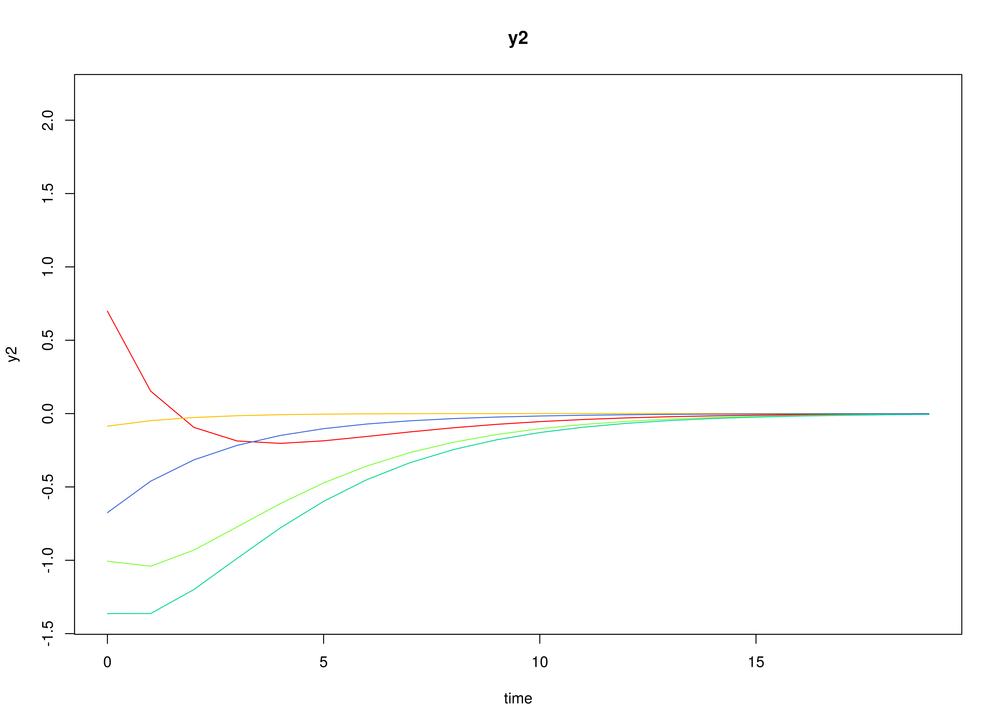
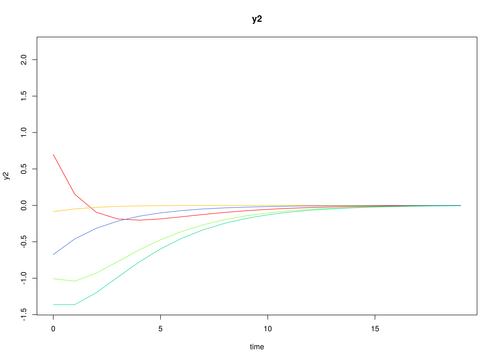

The Vector Autoregressive Model
Ivan Jacob Agaloos Pesigan
2024-07-05
Source:vignettes/var.Rmd
var.RmdModel
The measurement model is given by \[\begin{equation} \mathbf{y}_{i, t} = \boldsymbol{\eta}_{i, t} \end{equation}\] where \(\mathbf{y}_{i, t}\) represents a vector of observed variables and \(\boldsymbol{\eta}_{i, t}\) a vector of latent variables for individual \(i\) and time \(t\). Since the observed and latent variables are equal, we only generate data from the dynamic structure.
The dynamic structure is given by \[\begin{equation} \boldsymbol{\eta}_{i, t} = \boldsymbol{\alpha} + \boldsymbol{\beta} \boldsymbol{\eta}_{i, t - 1} + \boldsymbol{\zeta}_{i, t}, \quad \mathrm{with} \quad \boldsymbol{\zeta}_{i, t} \sim \mathcal{N} \left( \mathbf{0}, \boldsymbol{\Psi} \right) \end{equation}\] where \(\boldsymbol{\eta}_{i, t}\), \(\boldsymbol{\eta}_{i, t - 1}\), and \(\boldsymbol{\zeta}_{i, t}\) are random variables, and \(\boldsymbol{\alpha}\), \(\boldsymbol{\beta}\), and \(\boldsymbol{\Psi}\) are model parameters. Here, \(\boldsymbol{\eta}_{i, t}\) is a vector of latent variables at time \(t\) and individual \(i\), \(\boldsymbol{\eta}_{i, t - 1}\) represents a vector of latent variables at time \(t - 1\) and individual \(i\), and \(\boldsymbol{\zeta}_{i, t}\) represents a vector of dynamic noise at time \(t\) and individual \(i\). \(\boldsymbol{\alpha}\) denotes a vector of intercepts, \(\boldsymbol{\beta}\) a matrix of autoregression and cross regression coefficients, and \(\boldsymbol{\Psi}\) the covariance matrix of \(\boldsymbol{\zeta}_{i, t}\).
An alternative representation of the dynamic noise is given by \[\begin{equation} \boldsymbol{\zeta}_{i, t} = \boldsymbol{\Psi}^{\frac{1}{2}} \mathbf{z}_{i, t}, \quad \mathrm{with} \quad \mathbf{z}_{i, t} \sim \mathcal{N} \left( \mathbf{0}, \mathbf{I} \right) \end{equation}\] where \(\left( \boldsymbol{\Psi}^{\frac{1}{2}} \right) \left( \boldsymbol{\Psi}^{\frac{1}{2}} \right)^{\prime} = \boldsymbol{\Psi}\) .
Data Generation
Notation
Let \(t = 100\) be the number of time points and \(n = 5\) be the number of individuals.
Let the initial condition \(\boldsymbol{\eta}_{0}\) be given by
\[\begin{equation} \boldsymbol{\eta}_{0} \sim \mathcal{N} \left( \boldsymbol{\mu}_{\boldsymbol{\eta} \mid 0}, \boldsymbol{\Sigma}_{\boldsymbol{\eta} \mid 0} \right) \end{equation}\]
\[\begin{equation} \boldsymbol{\mu}_{\boldsymbol{\eta} \mid 0} = \left( \begin{array}{c} 0 \\ 0 \\ 0 \\ \end{array} \right) \end{equation}\]
\[\begin{equation} \boldsymbol{\Sigma}_{\boldsymbol{\eta} \mid 0} = \left( \begin{array}{ccc} 1 & 0.2 & 0.2 \\ 0.2 & 1 & 0.2 \\ 0.2 & 0.2 & 1 \\ \end{array} \right) . \end{equation}\]
Let the constant vector \(\boldsymbol{\alpha}\) be given by
\[\begin{equation} \boldsymbol{\alpha} = \left( \begin{array}{c} 0 \\ 0 \\ 0 \\ \end{array} \right) . \end{equation}\]
Let the transition matrix \(\boldsymbol{\beta}\) be given by
\[\begin{equation} \boldsymbol{\beta} = \left( \begin{array}{ccc} 0.7 & 0 & 0 \\ 0.5 & 0.6 & 0 \\ -0.1 & 0.4 & 0.5 \\ \end{array} \right) . \end{equation}\]
Let the dynamic process noise \(\boldsymbol{\Psi}\) be given by
\[\begin{equation} \boldsymbol{\Psi} = \left( \begin{array}{ccc} 0.1 & 0 & 0 \\ 0 & 0.1 & 0 \\ 0 & 0 & 0.1 \\ \end{array} \right) . \end{equation}\]
R Function Arguments
n
#> [1] 5
time
#> [1] 100
mu0
#> [1] 0 0 0
sigma0
#> [,1] [,2] [,3]
#> [1,] 1.0 0.2 0.2
#> [2,] 0.2 1.0 0.2
#> [3,] 0.2 0.2 1.0
sigma0_l
#> [,1] [,2] [,3]
#> [1,] 1.0 0.0000000 0.0000000
#> [2,] 0.2 0.9797959 0.0000000
#> [3,] 0.2 0.1632993 0.9660918
alpha
#> [1] 0 0 0
beta
#> [,1] [,2] [,3]
#> [1,] 0.7 0.0 0.0
#> [2,] 0.5 0.6 0.0
#> [3,] -0.1 0.4 0.5
psi
#> [,1] [,2] [,3]
#> [1,] 0.1 0.0 0.0
#> [2,] 0.0 0.1 0.0
#> [3,] 0.0 0.0 0.1
psi_l
#> [,1] [,2] [,3]
#> [1,] 0.3162278 0.0000000 0.0000000
#> [2,] 0.0000000 0.3162278 0.0000000
#> [3,] 0.0000000 0.0000000 0.3162278 

Using the SimSSMVARFixed Function from the simStateSpace Package to Simulate Data
library(simStateSpace)
sim <- SimSSMVARFixed(
n = n,
time = time,
mu0 = mu0,
sigma0_l = sigma0_l,
alpha = alpha,
beta = beta,
psi_l = psi_l
)
data <- as.data.frame(sim)
head(data)
#> id time y1 y2 y3
#> 1 1 0 -1.84569501 0.5815402 0.8057225
#> 2 1 1 -1.34252674 -1.1219724 0.9873906
#> 3 1 2 -0.57123433 -1.1591679 0.1280274
#> 4 1 3 -0.44448720 -0.9783200 -0.3028425
#> 5 1 4 -0.28796224 -1.2222325 -0.3807219
#> 6 1 5 0.01622801 -1.2362032 -1.0056038
plot(sim)


Model Fitting
Prepare Initial Condition
dynr_initial <- dynr::prep.initial(
values.inistate = mu0,
params.inistate = c("mu0_1", "mu0_2", "mu0_3"),
values.inicov = sigma0,
params.inicov = matrix(
data = c(
"sigma0_11", "sigma0_12", "sigma0_13",
"sigma0_12", "sigma0_22", "sigma0_23",
"sigma0_13", "sigma0_23", "sigma0_33"
),
nrow = 3
)
)Prepare Measurement Model
dynr_measurement <- dynr::prep.measurement(
values.load = diag(3),
params.load = matrix(data = "fixed", nrow = 3, ncol = 3),
state.names = c("eta_1", "eta_2", "eta_3"),
obs.names = c("y1", "y2", "y3")
)Prepare Dynamic Process
dynr_dynamics <- dynr::prep.formulaDynamics(
formula = list(
eta_1 ~ alpha_1 * 1 + beta_11 * eta_1 + beta_12 * eta_2 + beta_13 * eta_3,
eta_2 ~ alpha_2 * 1 + beta_21 * eta_1 + beta_22 * eta_2 + beta_23 * eta_3,
eta_3 ~ alpha_3 * 1 + beta_31 * eta_1 + beta_32 * eta_2 + beta_33 * eta_3
),
startval = c(
alpha_1 = alpha[1], alpha_2 = alpha[2], alpha_3 = alpha[3],
beta_11 = beta[1, 1], beta_12 = beta[1, 2], beta_13 = beta[1, 3],
beta_21 = beta[2, 1], beta_22 = beta[2, 2], beta_23 = beta[2, 3],
beta_31 = beta[3, 1], beta_32 = beta[3, 2], beta_33 = beta[3, 3]
),
isContinuousTime = FALSE
)Prepare Process Noise
dynr_noise <- dynr::prep.noise(
values.latent = psi,
params.latent = matrix(
data = c(
"psi_11", "psi_12", "psi_13",
"psi_12", "psi_22", "psi_23",
"psi_13", "psi_23", "psi_33"
),
nrow = 3
),
values.observed = matrix(data = 0, nrow = 3, ncol = 3),
params.observed = matrix(data = "fixed", nrow = 3, ncol = 3)
)Prepare the Model
model <- dynr::dynr.model(
data = dynr_data,
initial = dynr_initial,
measurement = dynr_measurement,
dynamics = dynr_dynamics,
noise = dynr_noise,
outfile = "var.c"
)
Fit the Model
results <- dynr::dynr.cook(
model,
debug_flag = TRUE,
verbose = FALSE
)
#> [1] "Get ready!!!!"
#> using C compiler: ‘gcc (Ubuntu 11.4.0-1ubuntu1~22.04) 11.4.0’
#> Optimization function called.
#> Starting Hessian calculation ...
#> Finished Hessian calculation.
#> Original exit flag: 3
#> Modified exit flag: 3
#> Optimization terminated successfully: ftol_rel or ftol_abs was reached.
#> Original fitted parameters: -0.01780361 0.007988374 0.007653975 0.7000363
#> 0.003324985 0.03447235 0.4709436 0.6460795 -0.01889653 -0.1191479 0.423746
#> 0.4788747 -2.366484 -0.08040767 -0.01334399 -2.219775 -0.09185627 -2.384591
#> -0.4153391 -0.06883323 0.1606552 -0.5715268 -0.1790723 -0.362347 -0.4746303
#> 0.4357563 -0.9470132
#>
#> Transformed fitted parameters: -0.01780361 0.007988374 0.007653975 0.7000363
#> 0.003324985 0.03447235 0.4709436 0.6460795 -0.01889653 -0.1191479 0.423746
#> 0.4788747 0.09380996 -0.00754304 -0.001251799 0.1092401 -0.009878017 0.09305999
#> -0.4153391 -0.06883323 0.1606552 0.5646626 -0.1011154 -0.2046038 0.640222
#> 0.3077294 0.5801649
#>
#> Doing end processing
#> Successful trial
#> Total Time: 21.87008
#> Backend Time: 21.26703Summary
summary(results)
#> Coefficients:
#> Estimate Std. Error t value ci.lower ci.upper Pr(>|t|)
#> alpha_1 -0.0178036 0.0139577 -1.276 -0.0451602 0.0095530 0.1014
#> alpha_2 0.0079884 0.0150619 0.530 -0.0215325 0.0375092 0.2981
#> alpha_3 0.0076540 0.0139018 0.551 -0.0195931 0.0349010 0.2911
#> beta_11 0.7000363 0.0338300 20.693 0.6337308 0.7663418 <2e-16 ***
#> beta_12 0.0033250 0.0274008 0.121 -0.0503795 0.0570295 0.4517
#> beta_13 0.0344723 0.0293774 1.173 -0.0231062 0.0920509 0.1206
#> beta_21 0.4709436 0.0365064 12.900 0.3993924 0.5424948 <2e-16 ***
#> beta_22 0.6460795 0.0295684 21.850 0.5881265 0.7040324 <2e-16 ***
#> beta_23 -0.0188965 0.0317015 -0.596 -0.0810303 0.0432373 0.2757
#> beta_31 -0.1191479 0.0336946 -3.536 -0.1851881 -0.0531076 0.0002 ***
#> beta_32 0.4237460 0.0272911 15.527 0.3702565 0.4772356 <2e-16 ***
#> beta_33 0.4788747 0.0292598 16.366 0.4215266 0.5362228 <2e-16 ***
#> psi_11 0.0938100 0.0059629 15.732 0.0821229 0.1054970 <2e-16 ***
#> psi_12 -0.0075430 0.0045626 -1.653 -0.0164855 0.0013994 0.0495 *
#> psi_13 -0.0012518 0.0041999 -0.298 -0.0094835 0.0069799 0.3829
#> psi_22 0.1092401 0.0069437 15.732 0.0956306 0.1228495 <2e-16 ***
#> psi_23 -0.0098780 0.0045535 -2.169 -0.0188026 -0.0009534 0.0153 *
#> psi_33 0.0930600 0.0059153 15.732 0.0814662 0.1046538 <2e-16 ***
#> mu0_1 -0.4153391 0.3360264 -1.236 -1.0739387 0.2432605 0.1085
#> mu0_2 -0.0688332 0.3578281 -0.192 -0.7701635 0.6324970 0.4238
#> mu0_3 0.1606552 0.3406037 0.472 -0.5069158 0.8282263 0.3187
#> sigma0_11 0.5646626 0.3570622 1.581 -0.1351665 1.2644918 0.0572 .
#> sigma0_12 -0.1011154 0.2726400 -0.371 -0.6354801 0.4332492 0.3554
#> sigma0_13 -0.2046038 0.2717841 -0.753 -0.7372909 0.3280832 0.2260
#> sigma0_22 0.6402220 0.4047781 1.582 -0.1531286 1.4335726 0.0572 .
#> sigma0_23 0.3077294 0.3052610 1.008 -0.2905712 0.9060300 0.1570
#> sigma0_33 0.5801649 0.3667936 1.582 -0.1387374 1.2990671 0.0572 .
#> ---
#> Signif. codes: 0 '***' 0.001 '**' 0.01 '*' 0.05 '.' 0.1 ' ' 1
#>
#> -2 log-likelihood value at convergence = 796.37
#> AIC = 850.37
#> BIC = 964.17Parameter Estimates
alpha_hat
#> [1] -0.017803606 0.007988374 0.007653975
beta_hat
#> [,1] [,2] [,3]
#> [1,] 0.7000363 0.003324985 0.03447235
#> [2,] 0.4709436 0.646079473 -0.01889653
#> [3,] -0.1191479 0.423746033 0.47887469
psi_hat
#> [,1] [,2] [,3]
#> [1,] 0.093809960 -0.007543040 -0.001251799
#> [2,] -0.007543040 0.109240060 -0.009878017
#> [3,] -0.001251799 -0.009878017 0.093059988
mu0_hat
#> [1] -0.41533909 -0.06883323 0.16065523
sigma0_hat
#> [,1] [,2] [,3]
#> [1,] 0.5646626 -0.1011154 -0.2046038
#> [2,] -0.1011154 0.6402220 0.3077294
#> [3,] -0.2046038 0.3077294 0.5801649